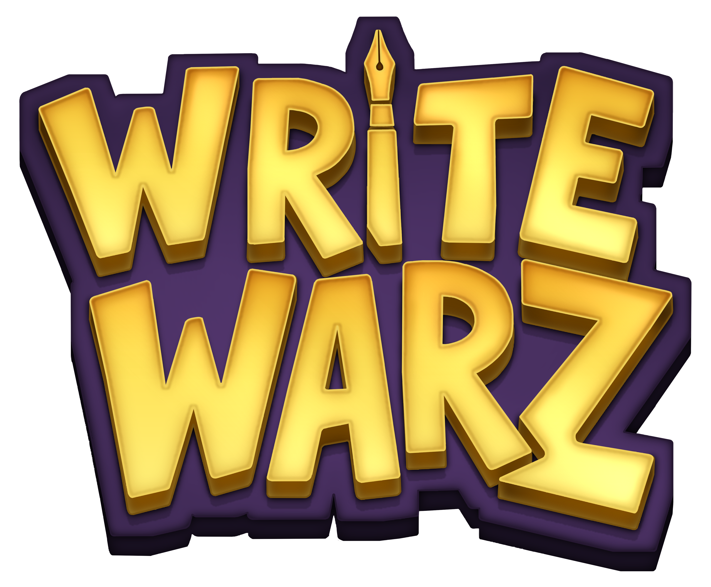
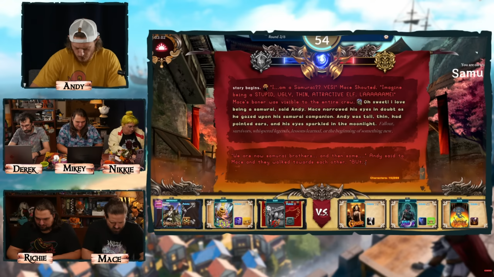
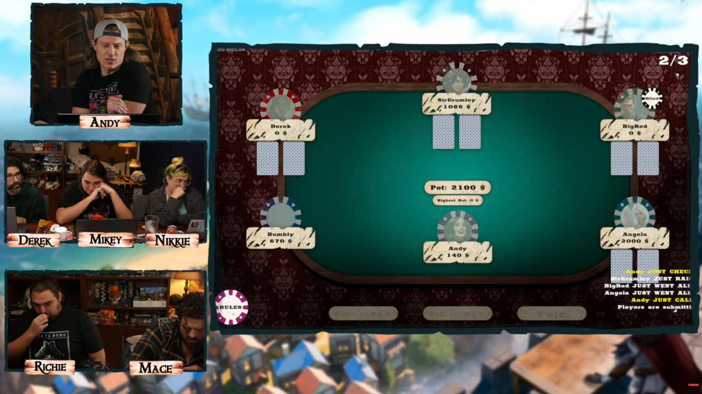
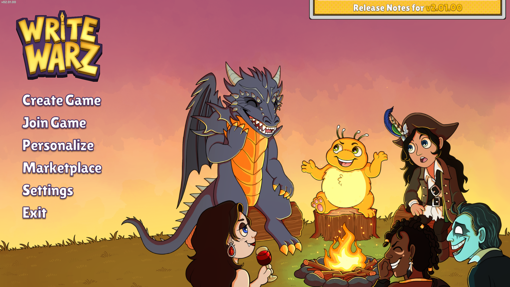

Chaotic writing party game to play with friends.
Winner of two Dreamhack Audience Choice awards!

Boltz Entertainment (6 Full Time Employees)
July 2025 - Present
Senior Programmer
Unity
I have been a part of the Boltz Entertainment team since July 2025. Write Warz was in early access when I joined, and we are currently working towards the full release. I have been leading the programming charge, communicating with our artists, sound designer, producer, and other programmers in order to stay on track and create something fun and cohesive. I have updated, reworked, or changed almost every system of the game.
Write Warz showcase.
Common theme minigames.

Legends of Avantris playing an early version of Elves vs Samurai.
Common theme minigames.

Legends of Avantris playing Lexicon Hold 'Em.
Write Warz is the first commercial game I have programmed for. We have made major changes and I am happy to be involved with the new direction of the project. So far, I have elevated my ability to recognize and program specific design patterns, increased my project management skills, and become a more organized person in all regards.
